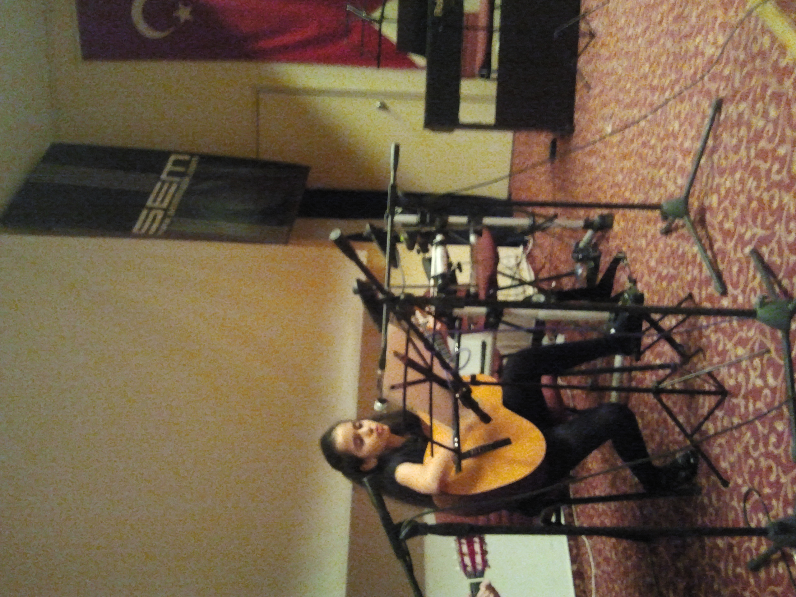
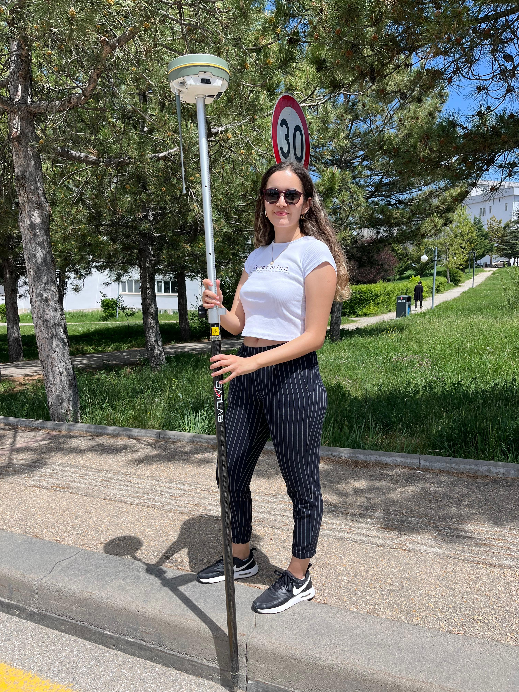

About Me
🎓 Education & Interests
I am a senior Geomatics Engineering student at Hacettepe University. My main interests are GIS, remote sensing, and spatial data science.
💻 Technical Skills
Experienced in Python, GeoPandas, Rasterio, Scikit-learn, and Tslearn for spatial and time-series analysis. Proficient in ArcGIS and QGIS.
🚀 Professional Experience
At Agrovisio, I developed NDVI-based workflows. At Globetech, I analyzed urban data to support planning processes.
🎶 Personal Life
Outside engineering, I enjoy music and outdoor photography. I play guitar and mix creativity with precision.

